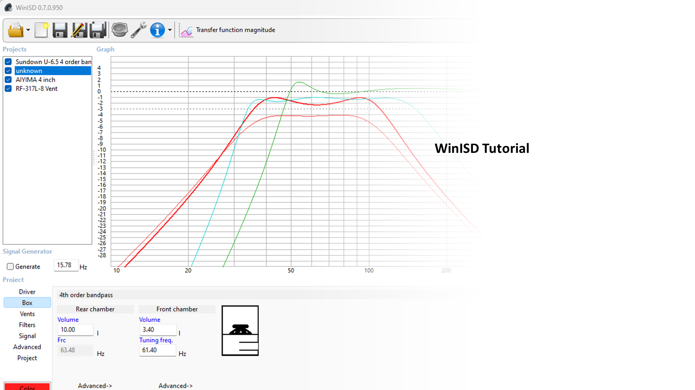
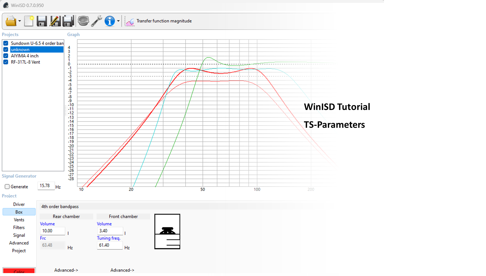
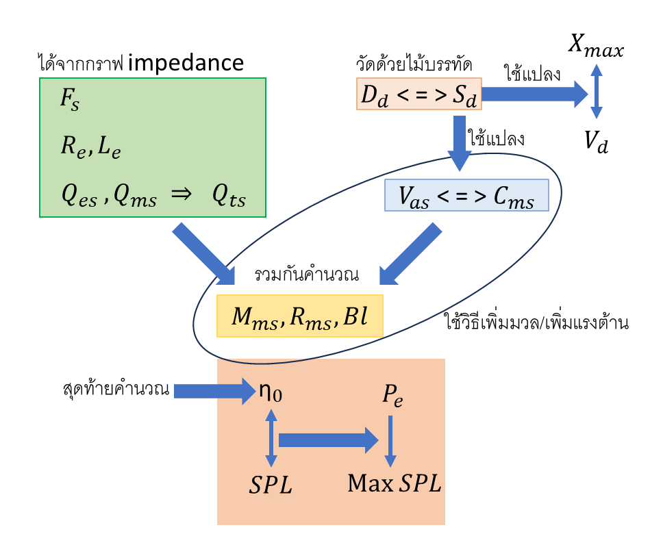
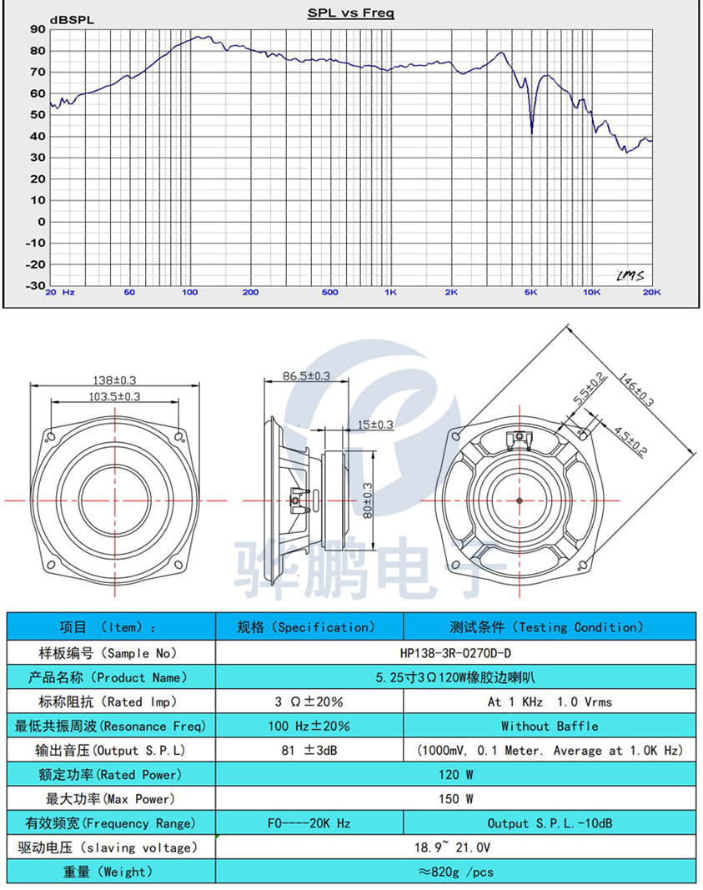
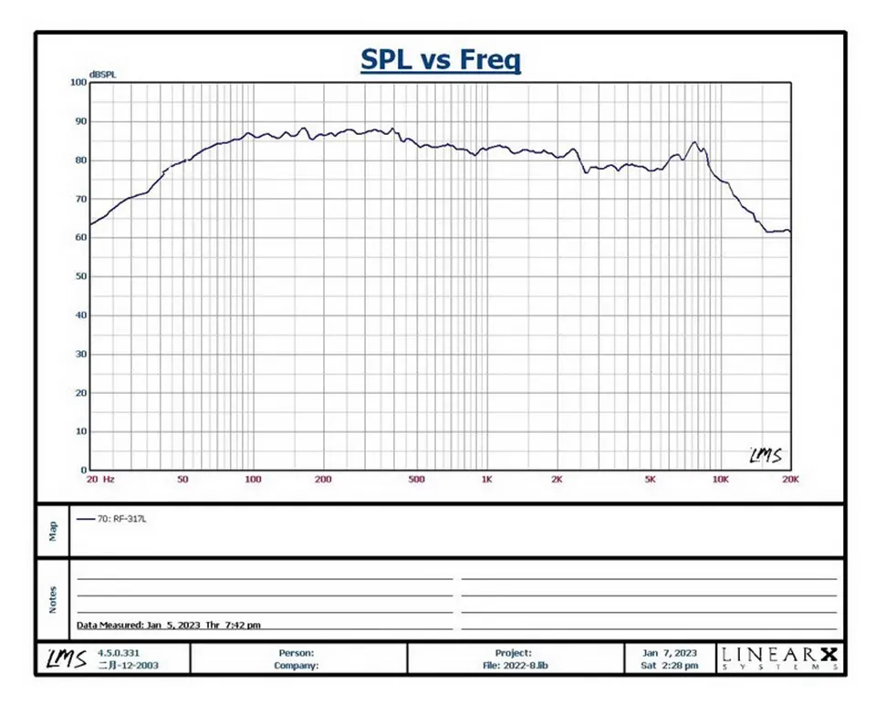
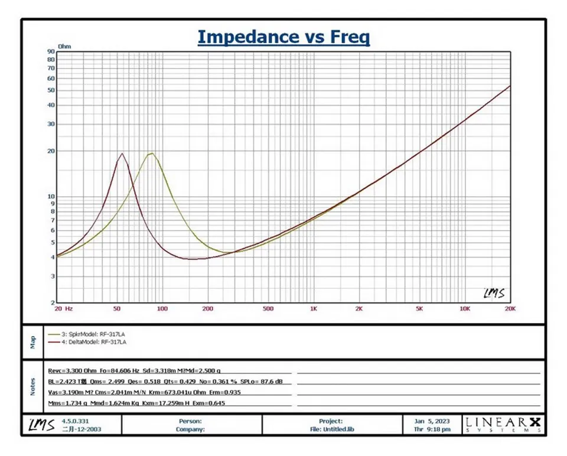
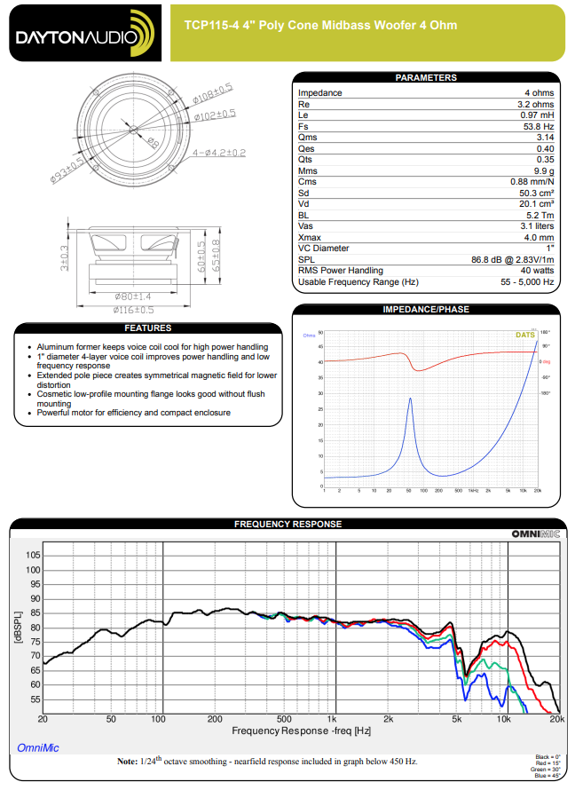

ตอนที่ 1 T/S-parameters

แนะนำการใช้โปรแกรมออกแบบตู้ลำโพง WinISD
WinISD เป็นโปรแกรมออกแบบลำโพงยอดนิยมตัวหนึ่ง ถึงแม้ช่วงนี้จะแผ่วๆ ไปบ้าง เนื่องจากโปรแกรมมีบัคและไม่ได้อัพเดทมานาน แล้วเหมือนโปรแกรมเมอร์เอาจะอยู่ใน ยูเครน (หรือแถวๆ นั้น หรือแค่อินกับสงครามเฉยๆ ?) อย่างไรก็ตามก็ติดตามเขาได้ที่เพจ WinISD
WinISD เป็นโปรแกรมที่ดีสำหรับมือใหม่ เวลาใช้จะทำให้เข้าใจวิธีการออกแบบมากขึ้น และที่สำคัญคือใช้ฟรี
ใครยังไม่มีสามารถ download ได้ที่ http://www.linearteam.org
ผมคงไม่บอกวิธีติดตั้งนะ แต่ถ้าใครติดปัญหาก็ถามได้ใน comment
อีกอย่างนึงที่ต้องบอกไว้ก่อนคือไม่ว่าจะเป็นโปรแกรมไหนก็ตาม มันก็เป็นแค่โปรแกรมจำลองโมเดลเท่านั้น เมื่อทำกล่องออกมาแล้ว ก็ไม่ได้หมายความว่าจะได้ผลลัพท์ออกมาตามที่คำนวณไว้ 100% เพราะของจริงมีตัวแปรอื่น ๆ อีกเต็มไปหมดทั้งที่วัดได้ วัดไม่ได้ ตัวอย่างเช่น box loss หรือการสูญเสียพลังงานของกล่องซึ่งอาจ เกิดจากลมรั่ว หรือซึมผ่านผนัง ซึ่งตอนนี้ยังไม่มีวิธีที่จะวัดได้
- ตอนแรกว่าจะทำแค่โพสต์เดียวแต่ทำไปทำมา ปรากฎว่ามันยาวเหลือเกิน ผมจึงขออนุญาตแยกเป็นตอน ๆ หลายตอนหน่อยแล้วเพิ่มเนื้อหาอีกหน่อย
ในตอนแรกนี้ผมจะมาแนะนำวิธีดู spec ลำโพง หรือค่า T/S-parameter เราจะได้เอามาใช้ใส่โปรแกรมในตอนต่อๆ ไป

- T/S-parameters
T/S-Parameters หรือชื่อเต็มๆ คือ Thiele/Small Parameters มาจากชื่อของ Neville Thiele และ Richard H. Small เล่าอย่างย่อ ๆ คือนักวิจัยทั้งสองท่านนี้พยายามหาวิธีจำลอง ลำโพงเป็นโมเดลทางไฟฟ้า เป็นการวิจัยที่ต่อเนื่องและยาวนานกว่า 30 ปี และทำให้สุดท้ายเราสามารถจำลองการตอบสนองความถี่เบสของ ตู้ลำโพงออกมาได้
รูปจาก https://audioxpress.com/article/voice-coil-interviews-dr-richard-h-small
- T/S-parameters ที่ (ผมเห็นว่า) สำคัญ
อ่านอย่างละเอียดที่ https://en.wikipedia.org/wiki/Thiele/Small_parameters
ส่วนนี้เป็นคำอธิบายคร่าว ๆ ของผม (คร่าวแล้วจริงๆ นะ) (หน่วยจะอยู่ในวงเล็บ สามารถใส่ prefix พวก m, c, etc ตามหน่วย metric ปกติ)
Fs (Hz) คือความถี่สั่นพ้องของดอกลำโพง Re (Ohm) คือความต้านทานไฟ DC
Q factor - Quality factor คือ Q เป็นค่าที่บอกสัดส่วนระหว่างพลังงานที่สามารถเก็บในระบบนั้น กับ พลังงานที่สูญเสียไปในหนึ่งวงรอบการทำงาน (จากชมรมวิทยุสมัครเล่น http://e20ae.blogspot.com/2018/04/q-factor.html
Qes Q ทางไฟฟ้า e - Electronic Qms Q ทางกล m - Mechanic Qts Q รวม t - Total
ทั้งนี้โปรแกรมมักจะคำนวณค่า Q จากกราฟ impedance
Dd (m) เส้นผ่านศูนย์กลางของ Diaphragm วัดจากกรึ่งกลาง surround ด้านหนึ่งไปอีกด้านหนึ่ง Sd (m^2) พื้นที่ของ Diaphragm คำนวณจาก Dd กรณี phase plug อาจจะต้องลดลงนิดนึง
Cms (mm/N) ระยะที่ลำโพงเคลื่อนที่ไปเมื่อออกแรง 1 N Vas (l) ปริมาตรของอากาศที่เทียบเท่า Cms
Mms (g) น้ำหนักของส่วนเคลื่อนไหวของลำโพง Rms (N.m/s) ความต้านทานทางกล (ความตึง?) Bl (T.m หรือ N/A) ความแรงของแม่เหล็ก
Le (H) สภาพตัวนำของลำโพง มักวัดที่ 1kHz
Xmax (mm) คือระยะเคลื่อนที่มากที่สุดของลำโพงก่อนที่เสียงจะเพี้ยน Xlim (mm) หรือ Xmech คือระยะเคลื่อนที่มากที่สุดของลำโพงที่จะทำให้เสียหายอย่างถาวร ปกติแล้วจะออกแบบไม่ให้เกิน Xmax Vd (l) คือปริมาตรอากาศที่ถูกดันเมื่อลำโพงขยับไป Xmax
SPL sound pressure level (dB) คือความดัง ณ ตำแหน่งวัด 1 m จากลำโพงมักจะวัดกับกำลังไฟ 1W โหลด 8 ohm หรือ ความดัน 2.83V n0 (%) คือประสิทธิภาพของลำโพง 1W ไฟฟ้า กลายเป็นเสียงกี่ % (100% = 112dB SPL) Pe (W) คือ Power Handling RMS
ในรูปเป็นขั้นตอนวิธีการคำนวณค่า parameter แต่ละตัวของโปรแกรม ซึ่งโปรแกรมที่ดีก็จะคำนวณย้อนกลับได้ด้วย

- ตัวอย่างไม่ดี ต่อไปจะเป็นตัวอย่างที่จะเห็นได้ในเว็ปต่าง ๆ ตัวอย่างแรกเป็นตัวอย่างที่ไม่ดี (หมายถึงวิธีวัดไม่ดีนะ ไม่ใช่ลำโพงไม่ดี)
จะเห็นว่าถึงเขาจะให้ค่า parameter มา แต่ก็ไม่ได้ตรงกับที่เราต้องการเลย เช่น Rate Imp วัดได้ 3 ohm ที่ 1kHz? ถ้าดู parameter ที่เราต้องการจริงๆ คือ Re ที่วัดจากไฟ DC Resonance Freq เชื่อว่าคือ Fs แต่ไม่มีกราฟ impedance มาให้ ก็ไม่รู้ว่าถูกต้องจริงหรือไม่ ต่อมา SPL เขาบอกวัดที่ 1000mV = 1V ที่ตำแหน่ง 0.1 m = 10 cm อันนี้ก็น่าจะพอคำนวณได้ว่า SPL จริงๆ ที่ 2.83V ตำแหน่ง 1 m เป็นเท่าไหร่ ส่วน parameter อื่นไม่มีเลย
ดังนั้นถ้าเราอยากจะรู้ว่าลำโพงนี้เป็นอย่างไรก็ต้องหวังพึ่งสมาชิกในกลุ่มที่เคยใช้มาก่อน อาจจะขอให้เขาวัดค่า parameter มาให้ : D ไม่แน่เราอาจจะเจอของถูกและดีจากลำโพงพวกนี้ก็ได้

- ตัวอย่างที่พอจะดูได้
https://www.aliexpress.com/item/1005005820259984.html
คำอธิบายบนเว็ปประมาณนี้
Speaker type: subwoofer Rated power: 35W Maximum power: 60W Rated impedance: 4 Ω / 8 Ω Frequency response range: 85HZ-5KHZ Resonance frequency: 85HZ Sensitivity: 87db±3db Basin material: Polymer pp Maximum outer diameter: 89.5 mm Speaker height: 51 mm Screw diagonal distance: 83 mm Voice coil diameter: 25 mm Qts: 0.43

- ตัวอย่างที่พอจะดูได้ (ต่อ) ถ้าสังเกตในช่อง Notes จะมีเขียนค่า T/S parameters ตัวเท่ามดไว้ ซึ่งก็ต้องเอามาซูมแตกแล้วแตกอีก หน่วยของค่าบางตัวก็แปลกๆ เช่น Sd ซึ่งผมยังไงก็ดูไม่ออกว่ามันคือหน่วยอะไร ค่า SPL ซึ่งเหมือนจะเอามาจากค่าความดังสูงสุด ไม่ได้เอามาจากค่าเฉลี่ย
และเมื่อวัดค่า parameter ออกมาจริงๆ แล้ว ค่าที่ได้ก็ไม่ตรงเท่าไหร่ (ที่รู้เพราะซื้อมาวัดเองแล้ว) และลำโพงนี้เป็นลำโพงที่เสียงดีใช้ได้เลยแหละ
ส่วนนี่เป็นค่าที่ผมวัดได้หลังเบิร์นไป 12 ชม. โดยใช้โปรแกรม REW TS Parameters file Room EQ V5.20.13 Dated: Sep 2, 2023 1:00:04 PM From measurement RF-317L-8
Zmin 7.86 ohm fmin 250 Hz f3 750 Hz Le(f3) 1.230 mH Motional impedance parameters R0 40.12 ohm CMES 193.1 uF L0 16.034 mH beta 0.0000 omega0 895.9 Blocked impedance parameters RDC 7.20 ohm dR -0.12 ohm Re 7.08 ohm Leb 55.2 uH Le 2.175 mH Rss 100000.0 ohm Ke 0.2621 S-H Thiele-Small parameters fs 90.5 Hz Qms 4.403 Qes 0.777 Qts 0.661 Fts 136.9 Mms 6.11 g Cms 0.506 mm/N Rms 0.789 kg/s Vas 0.57 litres Bl 5.627 Tm Eta 0.05 % Lp (1W/1m) 79.20 dB Dd 6.00 cm Sd 28.3 cm^2 Added mass 1 measurement: Added mass 1 3.000 g Added mass 2 measurement: Added mass 2 6.000 g Air temperature 28.0 C Air pressure 1013.25 mB Air density 1.1721 kg/m^3 Speed of sound 347.9 m/s

- ตัวอย่างสุดท้ายเป็นตัวอย่างมาตรฐาน
อันนี้ไม่ต้องอธิบายมาก เมื่อดูสเป็คก็จะเห็นค่า parameter ครบท้วนเลย ซึ่งดอกลำโพงพวกนี้ก็มักจะมีราคาแพง (หรือไม่แพงด้วยตัวมันก็แพงด้วยภาษีนำเข้า) แต่ก็ตามมาด้วยมาตรฐานที่ทุกๆ ดอกที่สั่งจะใกล้เคียงกันหมด ทำให้คนทำลำโพงสามารถรักษาคุณภาพได้
ในตอนแรกนี้ผมขอจบลงเท่านี้ก่อน ไว้ครั้งหน้าผมจะมาสอยวิธีใส่ค่าลำโพงลงโปรแกรมและวิธีสร้างโปรเจคใหม่ ส่วนใครอยากทำตามก็ลงโปรแกรมเตรียมไว้ได้เลย
ดาวโหลดโปรแกรมที่ http://www.linearteam.org
